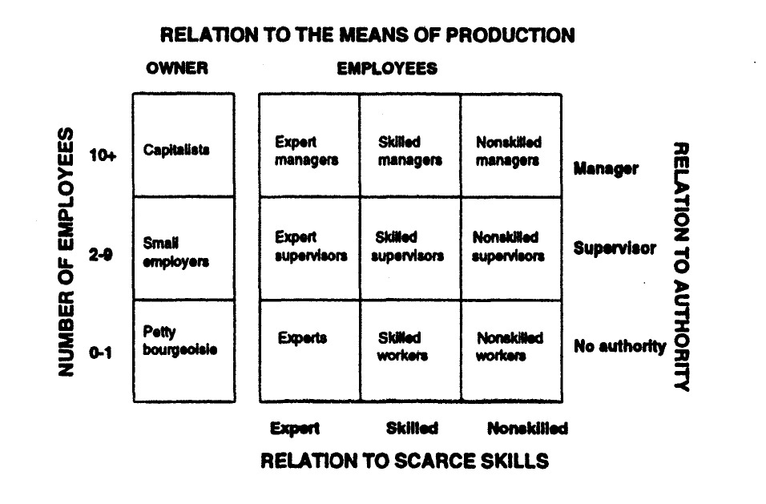

load("input/data/datos-conclat.Rdata")
data_raw <- data1 Procesamiento Data Conclat
1.1 Preparación
1.1.1 Cargar datos
1.1.2 Selección de Variables
data <- data_raw %>%
select(id,
rake_wb2,
# Relación con los medios de producción
a07,
a25, a25_esp, a25_esp_rec,
a26,
a27,
# Skills
a02,a02_rec,a03,a03_rec,
ciuo08_clio = ciuo08,
e05,
# Autoridad / orgnización
a15,
a16,
a17_01,a17_02,a17_03,a17_04,a17_05,a17_06,
# formalidad
a06, # boleta
a10,
a18
)# %>%
#sjlabelled::set_na(.,na=c(-999,-888,-777))1.2 Procesamiento
1.2.1 relation_mop
# Situación empleo
data <- data %>%
mutate(
a07 = factor(
as.numeric(a07),
levels = 1:9,
labels = c(
"1. Patrón(a) o empleador(a)",
"2. Trabajador(a) por cuenta propia",
"3. Empleado(a) u obrero(a) del sector público (Gobierno Central o Municipal)",
"4. Empleado(a) u obrero(a) de empresas públicas",
"5. Empleado(a) u obrero(a) del sector privado",
"6. Servicio doméstico puertas adentro",
"7. Servicio doméstico puertas afuera",
"8. FF.AA. y del Orden",
"9. Familiar no remunerado"
)
)
) %>%
set_variable_labels(a07 = "Employment situation (a07)")
frq(data$a07)Employment situation (a07) (x) <categorical>
# total N=3048 valid N=3048 mean=3.79 sd=1.67
Value | N | Raw % | Valid % | Cum. %
--------------------------------------------------------------------------------------------------------------
1. Patrón(a) o empleador(a) | 345 | 11.32 | 11.32 | 11.32
2. Trabajador(a) por cuenta propia | 598 | 19.62 | 19.62 | 30.94
3. Empleado(a) u obrero(a) del sector público (Gobierno Central o Municipal) | 251 | 8.23 | 8.23 | 39.17
4. Empleado(a) u obrero(a) de empresas públicas | 337 | 11.06 | 11.06 | 50.23
5. Empleado(a) u obrero(a) del sector privado | 1370 | 44.95 | 44.95 | 95.18
6. Servicio doméstico puertas adentro | 21 | 0.69 | 0.69 | 95.87
7. Servicio doméstico puertas afuera | 101 | 3.31 | 3.31 | 99.18
8. FF.AA. y del Orden | 13 | 0.43 | 0.43 | 99.61
9. Familiar no remunerado | 12 | 0.39 | 0.39 | 100.00
<NA> | 0 | 0.00 | <NA> | <NA>data <- data %>%
mutate(
relation_mop = case_when(
as_numeric(a07) == 1 ~ 1,
as_numeric(a07) == 2 ~ 2,
as_numeric(a07) >= 3 ~ 3,
TRUE ~ NA_real_
),
relation_mop = factor(
relation_mop,
levels = 1:3,
labels = c(
"1. Employers",
"2. Self-Employed",
"3. Salaried"
)
)
) %>%
set_variable_labels(relation_mop = "Relation with Means of Production")
frq(data$relation_mop)Relation with Means of Production (x) <categorical>
# total N=3048 valid N=3048 mean=2.58 sd=0.69
Value | N | Raw % | Valid % | Cum. %
--------------------------------------------------
1. Employers | 345 | 11.32 | 11.32 | 11.32
2. Self-Employed | 598 | 19.62 | 19.62 | 30.94
3. Salaried | 2105 | 69.06 | 69.06 | 100.00
<NA> | 0 | 0.00 | <NA> | <NA>1.2.2 company_size
frq(data$a26)x <numeric>
# total N=3048 valid N=3048 mean=-73.62 sd=251.41
Value | N | Raw % | Valid % | Cum. %
--------------------------------------
-999 | 8 | 0.26 | 0.26 | 0.26
-888 | 255 | 8.37 | 8.37 | 8.63
1 | 783 | 25.69 | 25.69 | 34.32
2 | 486 | 15.94 | 15.94 | 50.26
3 | 277 | 9.09 | 9.09 | 59.35
4 | 316 | 10.37 | 10.37 | 69.72
5 | 291 | 9.55 | 9.55 | 79.27
6 | 183 | 6.00 | 6.00 | 85.27
7 | 150 | 4.92 | 4.92 | 90.19
8 | 113 | 3.71 | 3.71 | 93.90
9 | 186 | 6.10 | 6.10 | 100.00
<NA> | 0 | 0.00 | <NA> | <NA>data <- data %>%
mutate(
company_size = case_when(
a26 %in% c(1) ~ 1,
a26 %in% c(2, 3) ~ 2,
a26 %in% c(4, 5) ~ 3,
a26 %in% c(6, 7) ~ 4,
a26 %in% c(8, 9) ~ 5,
TRUE ~ NA_real_
),
company_size = factor(
company_size,
levels = 1:5,
labels = c(
"Solo",
"2-9",
"10-49",
"50-199",
"200 or more"),
ordered = TRUE
)
) %>%
set_variable_labels(company_size = "Company Size")
frq(data$company_size)Company Size (x) <ordinal>
# total N=3048 valid N=2785 mean=2.50 sd=1.30
Value | N | Raw % | Valid % | Cum. %
--------------------------------------------
Solo | 783 | 25.69 | 28.11 | 28.11
2-9 | 763 | 25.03 | 27.40 | 55.51
10-49 | 607 | 19.91 | 21.80 | 77.31
50-199 | 333 | 10.93 | 11.96 | 89.26
200 or more | 299 | 9.81 | 10.74 | 100.00
<NA> | 263 | 8.63 | <NA> | <NA>1.2.3 workplace_size
frq(data$a27)x <numeric>
# total N=3048 valid N=3048 mean=-15.76 sd=129.92
Value | N | Raw % | Valid % | Cum. %
--------------------------------------
-999 | 8 | 0.26 | 0.26 | 0.26
-888 | 56 | 1.84 | 1.84 | 2.10
1 | 851 | 27.92 | 27.92 | 30.02
2 | 590 | 19.36 | 19.36 | 49.38
3 | 353 | 11.58 | 11.58 | 60.96
4 | 358 | 11.75 | 11.75 | 72.70
5 | 341 | 11.19 | 11.19 | 83.89
6 | 198 | 6.50 | 6.50 | 90.39
7 | 154 | 5.05 | 5.05 | 95.44
8 | 71 | 2.33 | 2.33 | 97.77
9 | 68 | 2.23 | 2.23 | 100.00
<NA> | 0 | 0.00 | <NA> | <NA>data <- data %>%
mutate(
workplace_size = case_when(
a27 %in% c(1) ~ 1,
a27 %in% c(2, 3) ~ 2,
a27 %in% c(4, 5) ~ 3,
a27 %in% c(6, 7) ~ 4,
a27 %in% c(8, 9) ~ 5,
TRUE ~ NA_real_
),
workplace_size = factor(
workplace_size,
levels = 1:5,
labels = c(
"Solo",
"2-9",
"10-49",
"50-199",
"200 or more"),
ordered = TRUE
)
) %>%
set_variable_labels(workplace_size = "Workplace Size")
frq(data$workplace_size)Workplace Size (x) <ordinal>
# total N=3048 valid N=2984 mean=2.32 sd=1.14
Value | N | Raw % | Valid % | Cum. %
--------------------------------------------
Solo | 851 | 27.92 | 28.52 | 28.52
2-9 | 943 | 30.94 | 31.60 | 60.12
10-49 | 699 | 22.93 | 23.42 | 83.55
50-199 | 352 | 11.55 | 11.80 | 95.34
200 or more | 139 | 4.56 | 4.66 | 100.00
<NA> | 64 | 2.10 | <NA> | <NA>1.2.4 owners
- 1 == employers o self employed sin empleados
- 2 == employers o self employed con 2-9 empleados
- 3 == employers o self employed com >= 10 empleados
table(data$relation_mop,data$company_size)
Solo 2-9 10-49 50-199 200 or more
1. Employers 141 128 47 12 11
2. Self-Employed 402 140 20 4 9
3. Salaried 240 495 540 317 279table(data$relation_mop,data$workplace_size)
Solo 2-9 10-49 50-199 200 or more
1. Employers 144 131 48 13 4
2. Self-Employed 411 151 22 7 2
3. Salaried 296 661 629 332 133data <- data %>%
mutate(
owners = case_when(
as.numeric(relation_mop) %in% 1:2 & (as.numeric(company_size) == 1 | (is.na(company_size) & as.numeric(workplace_size) == 1)) ~ 1,
as.numeric(relation_mop) %in% 1:2 & (as.numeric(company_size) == 2 | (is.na(company_size) & as.numeric(workplace_size) == 2)) ~ 2,
as.numeric(relation_mop) %in% 1:2 & (as.numeric(company_size) >= 3 | (is.na(company_size) & as.numeric(workplace_size) >= 3)) ~ 3,
TRUE ~ NA_real_
),
owners = factor(
owners,
levels = 1:3,
labels = c(
"1. Solo Self-Employed",
"2. Small employers",
"3. Employers"
)
)
) %>%
set_variable_labels(owners = "Owners")
frq(data$owners)Owners (x) <categorical>
# total N=3048 valid N=935 mean=1.53 sd=0.69
Value | N | Raw % | Valid % | Cum. %
-------------------------------------------------------
1. Solo Self-Employed | 551 | 18.08 | 58.93 | 58.93
2. Small employers | 276 | 9.06 | 29.52 | 88.45
3. Employers | 108 | 3.54 | 11.55 | 100.00
<NA> | 2113 | 69.32 | <NA> | <NA>1.2.5 owners2
- 1 == employers o self employed sin empleados
- 2 == employers o self employed con 2-49 empleados
- 3 == employers o self employed com >= 50 empleados
data <- data %>%
mutate(
owners2 = case_when(
as.numeric(relation_mop) %in% 1:2 & (as.numeric(company_size) == 1 | (is.na(company_size) & as.numeric(workplace_size) == 1)) ~ 1,
as.numeric(relation_mop) %in% 1:2 & (as.numeric(company_size) %in% 2:3 | (is.na(company_size) & as.numeric(workplace_size) %in% 2:3)) ~ 2,
as.numeric(relation_mop) %in% 1:2 & (as.numeric(company_size) >= 4 | (is.na(company_size) & as.numeric(workplace_size) >= 4)) ~ 3,
TRUE ~ NA_real_
),
owners2 = factor(
owners2,
levels = 1:3,
labels = c(
"1. Solo Self-Employed",
"2. Small employers",
"3. Employers"
)
)
) %>%
set_variable_labels(owners2 = "Owners 2")
frq(data$owners2)Owners 2 (x) <categorical>
# total N=3048 valid N=935 mean=1.45 sd=0.57
Value | N | Raw % | Valid % | Cum. %
-------------------------------------------------------
1. Solo Self-Employed | 551 | 18.08 | 58.93 | 58.93
2. Small employers | 348 | 11.42 | 37.22 | 96.15
3. Employers | 36 | 1.18 | 3.85 | 100.00
<NA> | 2113 | 69.32 | <NA> | <NA>1.2.6 educ
frq(data$e05)x <numeric>
# total N=3048 valid N=3048 mean=-2.37 sd=88.97
Value | N | Raw % | Valid % | Cum. %
---------------------------------------
-999 | 13 | 0.43 | 0.43 | 0.43
-888 | 14 | 0.46 | 0.46 | 0.89
1 | 28 | 0.92 | 0.92 | 1.80
2 | 95 | 3.12 | 3.12 | 4.92
3 | 215 | 7.05 | 7.05 | 11.98
4 | 201 | 6.59 | 6.59 | 18.57
5 | 1062 | 34.84 | 34.84 | 53.41
6 | 178 | 5.84 | 5.84 | 59.25
7 | 440 | 14.44 | 14.44 | 73.69
8 | 205 | 6.73 | 6.73 | 80.41
9 | 531 | 17.42 | 17.42 | 97.83
10 | 66 | 2.17 | 2.17 | 100.00
<NA> | 0 | 0.00 | <NA> | <NA>data <- data %>%
mutate(
educ = ifelse(e05 %in% c(-999, -888), NA, e05)
) %>%
set_variable_labels(educ = "Educational level")
frq(data$educ)Educational level (x) <numeric>
# total N=3048 valid N=3021 mean=6.03 sd=2.08
Value | N | Raw % | Valid % | Cum. %
---------------------------------------
1 | 28 | 0.92 | 0.93 | 0.93
2 | 95 | 3.12 | 3.14 | 4.07
3 | 215 | 7.05 | 7.12 | 11.19
4 | 201 | 6.59 | 6.65 | 17.84
5 | 1062 | 34.84 | 35.15 | 53.00
6 | 178 | 5.84 | 5.89 | 58.89
7 | 440 | 14.44 | 14.56 | 73.45
8 | 205 | 6.73 | 6.79 | 80.24
9 | 531 | 17.42 | 17.58 | 97.82
10 | 66 | 2.17 | 2.18 | 100.00
<NA> | 27 | 0.89 | <NA> | <NA>1.2.7 ciuo08_clio_2d
# Preparar variables necesarias
## Crear la glosa concatenada
data$glosa_ciuo08 <- paste(data$a02, data$a03, sep = " ")
## Crear isco a 2 dígitos
data <- data %>%
mutate(
ciuo08_clio_2d = as.numeric(substr(ciuo08_clio, 1, 2))
) %>%
set_variable_labels(ciuo08_clio_2d = "ISCO-08: 2 digits")
frq(data$ciuo08_clio_2d)ISCO-08: 2 digits (x) <numeric>
# total N=3048 valid N=3048 mean=54.09 sd=26.33
Value | N | Raw % | Valid % | Cum. %
--------------------------------------
-9 | 42 | 1.38 | 1.38 | 1.38
1 | 12 | 0.39 | 0.39 | 1.77
11 | 20 | 0.66 | 0.66 | 2.43
12 | 28 | 0.92 | 0.92 | 3.35
13 | 44 | 1.44 | 1.44 | 4.79
14 | 11 | 0.36 | 0.36 | 5.15
21 | 62 | 2.03 | 2.03 | 7.19
22 | 200 | 6.56 | 6.56 | 13.75
23 | 140 | 4.59 | 4.59 | 18.34
24 | 37 | 1.21 | 1.21 | 19.55
25 | 12 | 0.39 | 0.39 | 19.95
26 | 114 | 3.74 | 3.74 | 23.69
31 | 28 | 0.92 | 0.92 | 24.61
32 | 27 | 0.89 | 0.89 | 25.49
33 | 116 | 3.81 | 3.81 | 29.30
34 | 34 | 1.12 | 1.12 | 30.41
35 | 6 | 0.20 | 0.20 | 30.61
36 | 11 | 0.36 | 0.36 | 30.97
41 | 2 | 0.07 | 0.07 | 31.04
42 | 13 | 0.43 | 0.43 | 31.46
43 | 39 | 1.28 | 1.28 | 32.74
44 | 4 | 0.13 | 0.13 | 32.87
51 | 189 | 6.20 | 6.20 | 39.07
52 | 590 | 19.36 | 19.36 | 58.43
53 | 57 | 1.87 | 1.87 | 60.30
54 | 153 | 5.02 | 5.02 | 65.32
55 | 2 | 0.07 | 0.07 | 65.39
61 | 28 | 0.92 | 0.92 | 66.31
62 | 1 | 0.03 | 0.03 | 66.34
63 | 3 | 0.10 | 0.10 | 66.44
71 | 60 | 1.97 | 1.97 | 68.41
72 | 107 | 3.51 | 3.51 | 71.92
73 | 17 | 0.56 | 0.56 | 72.47
74 | 16 | 0.52 | 0.52 | 73.00
75 | 58 | 1.90 | 1.90 | 74.90
81 | 25 | 0.82 | 0.82 | 75.72
83 | 186 | 6.10 | 6.10 | 81.82
91 | 202 | 6.63 | 6.63 | 88.45
92 | 91 | 2.99 | 2.99 | 91.44
93 | 153 | 5.02 | 5.02 | 96.46
94 | 82 | 2.69 | 2.69 | 99.15
95 | 1 | 0.03 | 0.03 | 99.18
96 | 25 | 0.82 | 0.82 | 100.00
<NA> | 0 | 0.00 | <NA> | <NA># Revisar los NA
## Armar tabla filtrando a los NA
tabla_ciuo08_999 <- data %>%
filter(as.numeric(ciuo08_clio_2d) < 1) %>%
select(ciuo08_clio,
ciuo08_clio_2d,
glosa_ciuo08,
a03,
supervisa = a16,
educ = e05,
rama = a25,
a25_esp,
rama_esp = a25_esp_rec)
## Pasar tabla a word
tabla_ft <- flextable(tabla_ciuo08_999)
read_docx() %>%
body_add_flextable(value = tabla_ft) %>%
print(target = "output/tabla_ciuo08_999.docx")
## Revisar NA con API del INE
## Enviar la consulta al servidor
request <- httr::POST("https://rapps.ine.cl:9292/predict",
encode = "json",
body = list(text = tabla_ciuo08_999$glosa_ciuo08,
classification = "ciuo",
digits = 2))
## Extraer el contenido
ciuo08_ine_999 <- httr::content(request)
## Agregar como nueva columna a la base original
tabla_ciuo08_999$ciuo08_ine_999 <- unlist(ciuo08_ine_999$cod_final)
## Armar tabla filtrando a los NA con ciuo08 ine 999
tabla_ciuo08_999_ine <- tabla_ciuo08_999 %>%
select(ciuo08_clio,
ciuo08_clio_2d,
ciuo08_ine_999,
glosa_ciuo08,
a03,
supervisa,
educ,
rama,
rama_esp)
## Pasar tabla a word
tabla_ft <- flextable(tabla_ciuo08_999_ine)
read_docx() %>%
body_add_flextable(value = tabla_ft) %>%
print(target = "output/tabla_ciuo08_999_ine.docx")# Recuperar algunos NA
## Recodificar ciuo08 de NA recuperados
data <- data %>%
mutate(
ciuo08_clio = case_when(
ciuo08_clio == "-999" & a03 == "tejer" ~ "7318", # Artesanos de los tejidos, el cuero y materiales similares
ciuo08_clio == "-999" & a03 == "mantención" ~ "3121",
ciuo08_clio == "-999" & a03 == "aseo limpieza" ~ "9111",
ciuo08_clio == "-999" & a03 == "casa" ~ "9111",
ciuo08_clio == "-999" & a03 == "supervisar trabajos" ~ "3121",
ciuo08_clio == "-999" & a03 == "maquina pesada" ~ "8332",
ciuo08_clio == "-999" & a03 == "no responde" ~ "9111",
ciuo08_clio == "-999" & a03 == "Independiente" ~ "5212",
ciuo08_clio == "-999" & a03 == "estaba en la casa por permiso administrativo" ~ "9331",
ciuo08_clio == "-999" & a03 == "no trabja por ahoravendedor" ~ "5211",
ciuo08_clio == "-999" & a03 == "organizar y ordenar ropa" ~ "5242",
ciuo08_clio == "-999" & a03 == "ordenar y organizar ropa" ~ "5242",
ciuo08_clio == "-999" & a03 == "stripper" ~ "5249",
TRUE ~ ciuo08_clio
)
)
## Volver a crear ciuo08 con 2 dígitos y pasar -999 a NA
data <- data %>%
mutate(
ciuo08_clio_2d = as.numeric(substr(ciuo08_clio, 1, 2)),
ciuo08_clio_2d = ifelse(ciuo08_clio_2d==-9, NA,ciuo08_clio_2d)
) %>%
set_variable_labels(ciuo08_clio_2d = "ISCO-08: 2 digits")
frq(data$ciuo08_clio_2d)ISCO-08: 2 digits (x) <numeric>
# total N=3048 valid N=3019 mean=55.01 sd=25.42
Value | N | Raw % | Valid % | Cum. %
--------------------------------------
1 | 12 | 0.39 | 0.40 | 0.40
11 | 20 | 0.66 | 0.66 | 1.06
12 | 28 | 0.92 | 0.93 | 1.99
13 | 44 | 1.44 | 1.46 | 3.44
14 | 11 | 0.36 | 0.36 | 3.81
21 | 62 | 2.03 | 2.05 | 5.86
22 | 200 | 6.56 | 6.62 | 12.49
23 | 140 | 4.59 | 4.64 | 17.12
24 | 37 | 1.21 | 1.23 | 18.35
25 | 12 | 0.39 | 0.40 | 18.75
26 | 114 | 3.74 | 3.78 | 22.52
31 | 30 | 0.98 | 0.99 | 23.52
32 | 27 | 0.89 | 0.89 | 24.41
33 | 116 | 3.81 | 3.84 | 28.25
34 | 34 | 1.12 | 1.13 | 29.38
35 | 6 | 0.20 | 0.20 | 29.58
36 | 11 | 0.36 | 0.36 | 29.94
41 | 2 | 0.07 | 0.07 | 30.01
42 | 13 | 0.43 | 0.43 | 30.44
43 | 39 | 1.28 | 1.29 | 31.73
44 | 4 | 0.13 | 0.13 | 31.86
51 | 189 | 6.20 | 6.26 | 38.13
52 | 595 | 19.52 | 19.71 | 57.83
53 | 57 | 1.87 | 1.89 | 59.72
54 | 153 | 5.02 | 5.07 | 64.79
55 | 2 | 0.07 | 0.07 | 64.86
61 | 28 | 0.92 | 0.93 | 65.78
62 | 1 | 0.03 | 0.03 | 65.82
63 | 3 | 0.10 | 0.10 | 65.92
71 | 60 | 1.97 | 1.99 | 67.90
72 | 107 | 3.51 | 3.54 | 71.45
73 | 18 | 0.59 | 0.60 | 72.04
74 | 16 | 0.52 | 0.53 | 72.57
75 | 58 | 1.90 | 1.92 | 74.49
81 | 25 | 0.82 | 0.83 | 75.32
83 | 187 | 6.14 | 6.19 | 81.52
91 | 205 | 6.73 | 6.79 | 88.31
92 | 91 | 2.99 | 3.01 | 91.32
93 | 154 | 5.05 | 5.10 | 96.42
94 | 82 | 2.69 | 2.72 | 99.14
95 | 1 | 0.03 | 0.03 | 99.17
96 | 25 | 0.82 | 0.83 | 100.00
<NA> | 29 | 0.95 | <NA> | <NA># Chequeo códigos no existentes ciuo clio = 36, 55
## Armar tabla
tabla_ciuo08_36_55 <- data %>%
filter(as.numeric(ciuo08_clio_2d) %in% c(36, 55)) %>%
select(ciuo08_clio,
ciuo08_clio_2d,
glosa_ciuo08,
id,
supervisa = a16,
educ = e05,
rama = a25,
rama_esp = a25_esp_rec)
## Pasar tabla a word
tabla_ft <- flextable(tabla_ciuo08_36_55)
read_docx() %>%
body_add_flextable(value = tabla_ft) %>%
print(target = "output/tabla_ciuo08_36_55.docx")
## Revisar 36 y 55 con API del INE
## Enviar la consulta al servidor
request <- httr::POST("https://rapps.ine.cl:9292/predict",
encode = "json",
body = list(text = tabla_ciuo08_36_55$glosa_ciuo08,
classification = "ciuo",
digits = 2))
## Extraer el contenido
ciuo08_ine_36_55 <- httr::content(request)
## Agregar como nueva columna a la base original
tabla_ciuo08_36_55$ciuo08_ine_36_55 <- unlist(ciuo08_ine_36_55$cod_final)
## Armar tabla filtrando a los NA con ciuo08 ine 999
tabla_ciuo08_36_55_ine <- tabla_ciuo08_36_55 %>%
select(ciuo08_clio,
ciuo08_clio_2d,
ciuo08_ine_36_55,
glosa_ciuo08,
id,
supervisa,
educ,
rama,
rama_esp)
## Pasar tabla a word
tabla_ft <- flextable(tabla_ciuo08_36_55_ine)
read_docx() %>%
body_add_flextable(value = tabla_ft) %>%
print(target = "output/tabla_ciuo08_36_55_ine.docx")# Recuperar algunos códigos no existentes
## Recodificar ciuo08 de 36 55 recuperados
data <- data %>%
mutate(
ciuo08_clio = case_when(
ciuo08_clio == "5522" & id == "var_223" ~ "3343",
ciuo08_clio == "5521" & id == "var_2536" ~ "7322",
TRUE ~ ciuo08_clio
)
)
## Volver a crear ciuo08 con 2 dígitos
data <- data %>%
mutate(
ciuo08_clio_2d = as.numeric(substr(ciuo08_clio, 1, 2)),
ciuo08_clio_2d = ifelse(ciuo08_clio_2d==-9, NA,ciuo08_clio_2d)
) %>%
set_variable_labels(ciuo08_clio_2d = "ISCO-08: 2 digits")
frq(data$ciuo08_clio_2d)ISCO-08: 2 digits (x) <numeric>
# total N=3048 valid N=3019 mean=55.01 sd=25.42
Value | N | Raw % | Valid % | Cum. %
--------------------------------------
1 | 12 | 0.39 | 0.40 | 0.40
11 | 20 | 0.66 | 0.66 | 1.06
12 | 28 | 0.92 | 0.93 | 1.99
13 | 44 | 1.44 | 1.46 | 3.44
14 | 11 | 0.36 | 0.36 | 3.81
21 | 62 | 2.03 | 2.05 | 5.86
22 | 200 | 6.56 | 6.62 | 12.49
23 | 140 | 4.59 | 4.64 | 17.12
24 | 37 | 1.21 | 1.23 | 18.35
25 | 12 | 0.39 | 0.40 | 18.75
26 | 114 | 3.74 | 3.78 | 22.52
31 | 30 | 0.98 | 0.99 | 23.52
32 | 27 | 0.89 | 0.89 | 24.41
33 | 117 | 3.84 | 3.88 | 28.29
34 | 34 | 1.12 | 1.13 | 29.41
35 | 6 | 0.20 | 0.20 | 29.61
36 | 11 | 0.36 | 0.36 | 29.98
41 | 2 | 0.07 | 0.07 | 30.04
42 | 13 | 0.43 | 0.43 | 30.47
43 | 39 | 1.28 | 1.29 | 31.77
44 | 4 | 0.13 | 0.13 | 31.90
51 | 189 | 6.20 | 6.26 | 38.16
52 | 595 | 19.52 | 19.71 | 57.87
53 | 57 | 1.87 | 1.89 | 59.75
54 | 153 | 5.02 | 5.07 | 64.82
61 | 28 | 0.92 | 0.93 | 65.75
62 | 1 | 0.03 | 0.03 | 65.78
63 | 3 | 0.10 | 0.10 | 65.88
71 | 60 | 1.97 | 1.99 | 67.87
72 | 107 | 3.51 | 3.54 | 71.41
73 | 19 | 0.62 | 0.63 | 72.04
74 | 16 | 0.52 | 0.53 | 72.57
75 | 58 | 1.90 | 1.92 | 74.49
81 | 25 | 0.82 | 0.83 | 75.32
83 | 187 | 6.14 | 6.19 | 81.52
91 | 205 | 6.73 | 6.79 | 88.31
92 | 91 | 2.99 | 3.01 | 91.32
93 | 154 | 5.05 | 5.10 | 96.42
94 | 82 | 2.69 | 2.72 | 99.14
95 | 1 | 0.03 | 0.03 | 99.17
96 | 25 | 0.82 | 0.83 | 100.00
<NA> | 29 | 0.95 | <NA> | <NA># Chequeo COMPLETO de códigos ciuo08 con api INE
## Enviar la consulta al servidor
request <- httr::POST("https://rapps.ine.cl:9292/predict",
encode = "json",
body = list(text = data$glosa_ciuo08,
classification = "ciuo",
digits = 2))
## Extraer el contenido
ciuo08_ine <- httr::content(request)
## Agregar como nueva columna a la base original
data$ciuo08_ine <- unlist(ciuo08_ine$cod_final)
## Volver NA en ciuo08_ine los NA de ciuo08_clio_2d
data <- data %>%
mutate(
ciuo08_ine = ifelse(is.na(ciuo08_clio_2d), NA, ciuo08_ine)
)
## Buscar los códigos diferentes
diferente_ciuo <- data %>%
filter(ciuo08_ine != ciuo08_clio_2d | (is.na(ciuo08_ine) != is.na(ciuo08_clio_2d))) %>%
select(glosa_ciuo08, ciuo08_clio_2d, ciuo08_ine)
diferente_ciuo# A tibble: 845 × 3
glosa_ciuo08 ciuo08_clio_2d ciuo08_ine
<chr> <dbl> <chr>
1 isabel antonia castillo venegas vendedora de flores 75 52
2 trabajar manipular alimentos 94 51
3 Funcionario Público Remuneración 43 33
4 adminustrativa de salud atender clientes 33 22
5 dueña de casa aseo 51 91
6 empresa paisajismo areas verdes cuidamos el medio … 21 61
7 tens cuidados adulto mayores 22 32
8 minera cocina 21 81
9 Atención público Cajera, atención. Trabajo con niñ… 52 42
10 repartidor de encomienda dejar encomiendas en resp… 96 83
# ℹ 835 more rows1.2.8 skills
Experts -> ciuo08_2d == 11 a 34 con universitaria completa o más (educ >= 9) —> experts
Skilled -> ciuo08_2d == 11 a 34 con universitaria incompleta o menos (educ < 9), y
Skilled -> ciuo08_2d == 35,36,41:44,53, y
Skilled -> ciuo08_2d == 51,54,61,62,71:75,81 con media completa o más (educ >= 5).
Unskilled -> ciuo08_2d == 51,54,61,62,71:75,81 con media incompleta o menos, y
Unskilled -> ciuo08_2d == 52,63,82,83,90+
61 62 71:75 –> skilled
51,54,81 –> unskilled
data <- data %>%
mutate(
skills = case_when(
ciuo08_ine <= 34 & educ >= 9 ~ 1,
ciuo08_ine <= 34 & is.na(educ)~ 1,
ciuo08_ine <= 34 & educ < 9 ~ 2,
ciuo08_ine %in% c(35, 36, 41:44, 53) ~ 2,
ciuo08_ine %in% c(51, 54, 61, 62, 71:75, 81) & educ >= 5 ~ 2,
ciuo08_ine %in% c(61, 62, 71:75) & is.na(educ) ~ 2,
ciuo08_ine %in% c(51, 54, 61, 62, 71:75, 81) & educ <= 4 ~ 3,
ciuo08_ine %in% c(52, 63, 82, 83, 91:99) ~ 3,
ciuo08_ine %in% c(51, 54, 81) & is.na(educ) ~ 3
),
skills = factor(
skills,
levels = 1:3,
labels = c(
"1. Experts",
"2. Skilled",
"3. Unskilled"
)
)
) %>%
set_variable_labels(skills = "Skills")
frq(data$skills)Skills (x) <categorical>
# total N=3048 valid N=3019 mean=2.29 sd=0.72
Value | N | Raw % | Valid % | Cum. %
----------------------------------------------
1. Experts | 469 | 15.39 | 15.53 | 15.53
2. Skilled | 1198 | 39.30 | 39.68 | 55.22
3. Unskilled | 1352 | 44.36 | 44.78 | 100.00
<NA> | 29 | 0.95 | <NA> | <NA>1.2.9 formal_position_auth
frq(data$a15)x <numeric>
# total N=3048 valid N=2107 mean=3.76 sd=0.63
Value | N | Raw % | Valid % | Cum. %
---------------------------------------
1 | 41 | 1.35 | 1.95 | 1.95
2 | 102 | 3.35 | 4.84 | 6.79
3 | 188 | 6.17 | 8.92 | 15.71
4 | 1776 | 58.27 | 84.29 | 100.00
<NA> | 941 | 30.87 | <NA> | <NA>data <- data %>%
mutate(
formal_position_auth = case_when(
as.numeric(relation_mop) %in% c(1, 2) ~ NA_real_,
TRUE ~ as.numeric(a15)
),
formal_position_auth = factor(
formal_position_auth,
levels = 1:4,
labels = c(
"1. Senior manager or executive",
"2. Middle manager (e.g., sector, office or branch head)",
"3. Supervisor or foreperson",
"4. Regular employee or worker (no supervisory role)"
)
)
) %>%
set_variable_labels(formal_position_auth = "Formal position of authority (a15)")
frq(data$formal_position_auth)Formal position of authority (a15) (x) <categorical>
# total N=3048 valid N=2105 mean=3.76 sd=0.63
Value | N | Raw % | Valid % | Cum. %
-----------------------------------------------------------------------------------------
1. Senior manager or executive | 41 | 1.35 | 1.95 | 1.95
2. Middle manager (e.g., sector, office or branch head) | 102 | 3.35 | 4.85 | 6.79
3. Supervisor or foreperson | 188 | 6.17 | 8.93 | 15.72
4. Regular employee or worker (no supervisory role) | 1774 | 58.20 | 84.28 | 100.00
<NA> | 943 | 30.94 | <NA> | <NA>1.2.10 supervision
frq(data$a16)x <numeric>
# total N=3048 valid N=2105 mean=-12.08 sd=112.46
Value | N | Raw % | Valid % | Cum. %
---------------------------------------
-999 | 8 | 0.26 | 0.38 | 0.38
-888 | 24 | 0.79 | 1.14 | 1.52
1 | 280 | 9.19 | 13.30 | 14.82
2 | 1793 | 58.83 | 85.18 | 100.00
<NA> | 943 | 30.94 | <NA> | <NA>data <- data %>%
mutate(
supervision = case_when(
a16 == 1 ~ 1,
a16 %in% c(2, -888, -999) ~ 0,
TRUE ~ NA_real_
)
) %>%
set_variable_labels(supervision = "Supervises other workers (a16)")
frq(data$supervision)Supervises other workers (a16) (x) <numeric>
# total N=3048 valid N=2105 mean=0.13 sd=0.34
Value | N | Raw % | Valid % | Cum. %
---------------------------------------
0 | 1825 | 59.88 | 86.70 | 86.70
1 | 280 | 9.19 | 13.30 | 100.00
<NA> | 943 | 30.94 | <NA> | <NA>1.2.11 decisionmaking_typology
frq(data$a17_01)x <numeric>
# total N=3048 valid N=2105 mean=-19.16 sd=140.62
Value | N | Raw % | Valid % | Cum. %
---------------------------------------
-999 | 14 | 0.46 | 0.67 | 0.67
-888 | 36 | 1.18 | 1.71 | 2.38
1 | 101 | 3.31 | 4.80 | 7.17
2 | 338 | 11.09 | 16.06 | 23.23
3 | 1616 | 53.02 | 76.77 | 100.00
<NA> | 943 | 30.94 | <NA> | <NA>frq(data$a17_02)x <numeric>
# total N=3048 valid N=2105 mean=-16.73 sd=132.62
Value | N | Raw % | Valid % | Cum. %
---------------------------------------
-999 | 10 | 0.33 | 0.48 | 0.48
-888 | 35 | 1.15 | 1.66 | 2.14
1 | 55 | 1.80 | 2.61 | 4.75
2 | 223 | 7.32 | 10.59 | 15.34
3 | 1782 | 58.46 | 84.66 | 100.00
<NA> | 943 | 30.94 | <NA> | <NA>frq(data$a17_03)x <numeric>
# total N=3048 valid N=2105 mean=-12.16 sd=117.04
Value | N | Raw % | Valid % | Cum. %
---------------------------------------
-999 | 11 | 0.36 | 0.52 | 0.52
-888 | 23 | 0.75 | 1.09 | 1.62
1 | 71 | 2.33 | 3.37 | 4.99
2 | 249 | 8.17 | 11.83 | 16.82
3 | 1751 | 57.45 | 83.18 | 100.00
<NA> | 943 | 30.94 | <NA> | <NA>frq(data$a17_04)x <numeric>
# total N=3048 valid N=2105 mean=-12.57 sd=118.59
Value | N | Raw % | Valid % | Cum. %
---------------------------------------
-999 | 11 | 0.36 | 0.52 | 0.52
-888 | 24 | 0.79 | 1.14 | 1.66
1 | 56 | 1.84 | 2.66 | 4.32
2 | 259 | 8.50 | 12.30 | 16.63
3 | 1755 | 57.58 | 83.37 | 100.00
<NA> | 943 | 30.94 | <NA> | <NA>frq(data$a17_05)x <numeric>
# total N=3048 valid N=2105 mean=-9.96 sd=107.12
Value | N | Raw % | Valid % | Cum. %
---------------------------------------
-999 | 7 | 0.23 | 0.33 | 0.33
-888 | 22 | 0.72 | 1.05 | 1.38
1 | 120 | 3.94 | 5.70 | 7.08
2 | 418 | 13.71 | 19.86 | 26.94
3 | 1538 | 50.46 | 73.06 | 100.00
<NA> | 943 | 30.94 | <NA> | <NA>frq(data$a17_06)x <numeric>
# total N=3048 valid N=2105 mean=-20.39 sd=143.27
Value | N | Raw % | Valid % | Cum. %
---------------------------------------
-999 | 7 | 0.23 | 0.33 | 0.33
-888 | 47 | 1.54 | 2.23 | 2.57
1 | 63 | 2.07 | 2.99 | 5.56
2 | 211 | 6.92 | 10.02 | 15.58
3 | 1777 | 58.30 | 84.42 | 100.00
<NA> | 943 | 30.94 | <NA> | <NA>data <- data %>%
mutate(
decisionmaking_typology = if_else(
is.na(a17_01),
NA_real_,
rowSums(across(a17_01:a17_06, ~ case_when(
.x == 1 ~ 3,
.x == 2 ~ 2,
.x == 3 ~ 1,
.x %in% c(-888, -999) ~ 1,
TRUE ~ NA_real_
)), na.rm = TRUE)
),
decisionmaking_typology_mean = if_else(
is.na(a17_01),
NA_real_,
rowMeans(across(a17_01:a17_06, ~ case_when(
.x == 1 ~ 3,
.x == 2 ~ 2,
.x == 3 ~ 1,
.x %in% c(-888, -999) ~ 1,
TRUE ~ NA_real_
)), na.rm = TRUE)
)
) %>%
set_variable_labels(
decisionmaking_typology = "Decision-making typology (sum, inverted)",
decisionmaking_typology_mean = "Decision-making typology (mean, inverted)"
)
frq(data$decisionmaking_typology)Decision-making typology (sum, inverted) (x) <numeric>
# total N=3048 valid N=2105 mean=7.25 sd=2.38
Value | N | Raw % | Valid % | Cum. %
---------------------------------------
6 | 1363 | 44.72 | 64.75 | 64.75
7 | 228 | 7.48 | 10.83 | 75.58
8 | 139 | 4.56 | 6.60 | 82.19
9 | 79 | 2.59 | 3.75 | 85.94
10 | 67 | 2.20 | 3.18 | 89.12
11 | 61 | 2.00 | 2.90 | 92.02
12 | 78 | 2.56 | 3.71 | 95.72
13 | 27 | 0.89 | 1.28 | 97.01
14 | 11 | 0.36 | 0.52 | 97.53
15 | 10 | 0.33 | 0.48 | 98.00
16 | 10 | 0.33 | 0.48 | 98.48
17 | 5 | 0.16 | 0.24 | 98.72
18 | 27 | 0.89 | 1.28 | 100.00
<NA> | 943 | 30.94 | <NA> | <NA>frq(data$decisionmaking_typology_mean)Decision-making typology (mean, inverted) (x) <numeric>
# total N=3048 valid N=2105 mean=1.21 sd=0.40
Value | N | Raw % | Valid % | Cum. %
---------------------------------------
1.00 | 1363 | 44.72 | 64.75 | 64.75
1.17 | 228 | 7.48 | 10.83 | 75.58
1.33 | 139 | 4.56 | 6.60 | 82.19
1.50 | 79 | 2.59 | 3.75 | 85.94
1.67 | 67 | 2.20 | 3.18 | 89.12
1.83 | 61 | 2.00 | 2.90 | 92.02
2.00 | 78 | 2.56 | 3.71 | 95.72
2.17 | 27 | 0.89 | 1.28 | 97.01
2.33 | 11 | 0.36 | 0.52 | 97.53
2.50 | 10 | 0.33 | 0.48 | 98.00
2.67 | 10 | 0.33 | 0.48 | 98.48
2.83 | 5 | 0.16 | 0.24 | 98.72
3.00 | 27 | 0.89 | 1.28 | 100.00
<NA> | 943 | 30.94 | <NA> | <NA># Crear variable con 3 categorías
data <- data %>%
mutate(
decisionmaking_typology_cat = case_when(
decisionmaking_typology_mean == 1 ~ 1,
decisionmaking_typology_mean > 1 & decisionmaking_typology_mean < 3 ~ 2,
decisionmaking_typology_mean == 3 ~ 3
),
decisionmaking_typology_cat = factor(
decisionmaking_typology_cat,
levels = 1:3
)
) %>%
set_variable_labels(
decisionmaking_typology_cat = "Decision-making typology (recoded 3 categories)"
)
frq(data$decisionmaking_typology_cat)Decision-making typology (recoded 3 categories) (x) <categorical>
# total N=3048 valid N=2105 mean=1.37 sd=0.51
Value | N | Raw % | Valid % | Cum. %
---------------------------------------
1 | 1363 | 44.72 | 64.75 | 64.75
2 | 715 | 23.46 | 33.97 | 98.72
3 | 27 | 0.89 | 1.28 | 100.00
<NA> | 943 | 30.94 | <NA> | <NA>1.2.12 managerial_location_typology
data <- data %>%
mutate(
managerial_location_typology = case_when(
as.integer(decisionmaking_typology_cat) == 3 & supervision == 1 & as.integer(formal_position_auth) %in% 1:3 ~ 1,
as.integer(decisionmaking_typology_cat) == 3 & supervision == 1 & as.integer(formal_position_auth) == 4 ~ 2,
as.integer(decisionmaking_typology_cat) == 3 & supervision == 0 & as.integer(formal_position_auth) %in% 1:3 ~ 3,
as.integer(decisionmaking_typology_cat) == 3 & supervision == 0 & as.integer(formal_position_auth) == 4 ~ 4,
as.integer(decisionmaking_typology_cat) == 2 & supervision == 1 & as.integer(formal_position_auth) %in% 1:3 ~ 5,
as.integer(decisionmaking_typology_cat) == 2 & supervision == 1 & as.integer(formal_position_auth) == 4 ~ 6,
as.integer(decisionmaking_typology_cat) == 2 & supervision == 0 & as.integer(formal_position_auth) %in% 1:3 ~ 7,
as.integer(decisionmaking_typology_cat) == 2 & supervision == 0 & as.integer(formal_position_auth) == 4 ~ 8,
as.integer(decisionmaking_typology_cat) == 1 & supervision == 1 & as.integer(formal_position_auth) %in% 1:3 ~ 9,
as.integer(decisionmaking_typology_cat) == 1 & supervision == 1 & as.integer(formal_position_auth) == 4 ~ 10,
as.integer(decisionmaking_typology_cat) == 1 & supervision == 0 & as.integer(formal_position_auth) %in% 1:3 ~ 11,
as.integer(decisionmaking_typology_cat) == 1 & supervision == 0 & as.integer(formal_position_auth) == 4 ~ 12
),
managerial_location_typology = factor(
managerial_location_typology,
levels = 1:12,
labels = c(
"1. Manager on all criteria",
"2. Manager not in formal hierarchy",
"3. Non-supervisory manager",
"4. Non-supervisory decision-maker not in formal hierarchy",
"5. Advisor-manager on all criteria",
"6. Advisor not in hierarchy",
"7. Non-supervisory advisor",
"8. Non-supervisory advisor not in formal hierarchy",
"9. Sanctioning / task supervisor in hierarchy",
"10. Sanctioning / task supervisor not in hierarchy",
"11. Not subordinates but in hierarchy",
"12. Non-supervisor / non manager on all criteria"
)
),
organization_assets = case_when(
as.integer(managerial_location_typology) %in% c(1, 2, 3, 5) ~ 1,
as.integer(managerial_location_typology) %in% c(6, 7, 9, 10) ~ 2,
as.integer(managerial_location_typology) %in% c(4, 8, 11, 12) ~ 3
),
organization_assets = factor(
organization_assets,
levels = 1:3,
labels = c(
"1. Manager",
"2. Supervisor",
"3. Non-managerial worker"
)
)
) %>%
set_variable_labels(
managerial_location_typology = "Managerial Location Typology",
organization_assets = "Organizational Assets"
)
frq(data$managerial_location_typology)Managerial Location Typology (x) <categorical>
# total N=3048 valid N=2105 mean=10.12 sd=2.66
Value | N | Raw % | Valid % | Cum. %
-------------------------------------------------------------------------------------------
1. Manager on all criteria | 18 | 0.59 | 0.86 | 0.86
2. Manager not in formal hierarchy | 4 | 0.13 | 0.19 | 1.05
3. Non-supervisory manager | 4 | 0.13 | 0.19 | 1.24
4. Non-supervisory decision-maker not in formal hierarchy | 1 | 0.03 | 0.05 | 1.28
5. Advisor-manager on all criteria | 174 | 5.71 | 8.27 | 9.55
6. Advisor not in hierarchy | 67 | 2.20 | 3.18 | 12.73
7. Non-supervisory advisor | 86 | 2.82 | 4.09 | 16.82
8. Non-supervisory advisor not in formal hierarchy | 388 | 12.73 | 18.43 | 35.25
9. Sanctioning / task supervisor in hierarchy | 7 | 0.23 | 0.33 | 35.58
10. Sanctioning / task supervisor not in hierarchy | 10 | 0.33 | 0.48 | 36.06
11. Not subordinates but in hierarchy | 42 | 1.38 | 2.00 | 38.05
12. Non-supervisor / non manager on all criteria | 1304 | 42.78 | 61.95 | 100.00
<NA> | 943 | 30.94 | <NA> | <NA>frq(data$organization_assets)Organizational Assets (x) <categorical>
# total N=3048 valid N=2105 mean=2.73 sd=0.62
Value | N | Raw % | Valid % | Cum. %
----------------------------------------------------------
1. Manager | 200 | 6.56 | 9.50 | 9.50
2. Supervisor | 170 | 5.58 | 8.08 | 17.58
3. Non-managerial worker | 1735 | 56.92 | 82.42 | 100.00
<NA> | 943 | 30.94 | <NA> | <NA>1.2.13 boletas
frq(data$a06)x <numeric>
# total N=3048 valid N=3048 mean=-11.58 sd=113.10
Value | N | Raw % | Valid % | Cum. %
---------------------------------------
-999 | 11 | 0.36 | 0.36 | 0.36
-888 | 36 | 1.18 | 1.18 | 1.54
1 | 478 | 15.68 | 15.68 | 17.22
2 | 398 | 13.06 | 13.06 | 30.28
3 | 2125 | 69.72 | 69.72 | 100.00
<NA> | 0 | 0.00 | <NA> | <NA>table(data$a06, data$relation_mop)
1. Employers 2. Self-Employed 3. Salaried
-999 1 3 7
-888 4 2 30
1 131 85 262
2 78 122 198
3 131 386 1608table(data$a06, data$owners)
1. Solo Self-Employed 2. Small employers 3. Employers
-999 4 0 0
-888 0 2 4
1 107 65 43
2 89 90 19
3 351 119 42table(data$a06, data$owners2)
1. Solo Self-Employed 2. Small employers 3. Employers
-999 4 0 0
-888 0 2 4
1 107 99 9
2 89 101 8
3 351 146 151.2.14 inicio_actividades
frq(data$a10)x <numeric>
# total N=3048 valid N=945 mean=3.14 sd=1.72
Value | N | Raw % | Valid % | Cum. %
---------------------------------------
1 | 254 | 8.33 | 26.88 | 26.88
2 | 192 | 6.30 | 20.32 | 47.20
3 | 63 | 2.07 | 6.67 | 53.86
4 | 42 | 1.38 | 4.44 | 58.31
5 | 394 | 12.93 | 41.69 | 100.00
<NA> | 2103 | 69.00 | <NA> | <NA>table(data$a10, data$relation_mop)
1. Employers 2. Self-Employed 3. Salaried
1 143 111 0
2 63 129 0
3 40 23 0
4 19 23 0
5 80 312 2table(data$a10, data$owners)
1. Solo Self-Employed 2. Small employers 3. Employers
1 131 79 43
2 90 87 14
3 16 33 13
4 16 12 13
5 298 65 25table(data$a10, data$owners2)
1. Solo Self-Employed 2. Small employers 3. Employers
1 131 111 11
2 90 95 6
3 16 42 4
4 16 20 5
5 298 80 101.2.15 contrato_escrito
frq(data$a18)x <numeric>
# total N=3048 valid N=2105 mean=-13.86 sd=122.43
Value | N | Raw % | Valid % | Cum. %
---------------------------------------
-999 | 32 | 1.05 | 1.52 | 1.52
1 | 1691 | 55.48 | 80.33 | 81.85
2 | 76 | 2.49 | 3.61 | 85.46
3 | 272 | 8.92 | 12.92 | 98.38
4 | 34 | 1.12 | 1.62 | 100.00
<NA> | 943 | 30.94 | <NA> | <NA>table(data$a18, data$relation_mop)
1. Employers 2. Self-Employed 3. Salaried
-999 0 0 32
1 0 0 1691
2 0 0 76
3 0 0 272
4 0 0 34tabla <- data %>%
filter(as.numeric(owners)==1)
table(tabla$a18, tabla$a06)< table of extent 0 x 4 >table(data$a18, data$a06)
-999 -888 1 2 3
-999 1 0 10 3 18
1 5 22 193 151 1320
2 1 2 13 14 46
3 0 4 39 23 206
4 0 2 7 7 18table(data$owners, data$educ)
1 2 3 4 5 6 7 8 9 10
1. Solo Self-Employed 11 29 66 61 200 35 57 23 55 10
2. Small employers 5 14 28 24 88 13 37 19 39 7
3. Employers 1 1 4 5 38 8 13 5 19 11.3 Clases

1.3.1 wrightclass1_original
employers: employers con 10 o más trabajadores
data <- data %>%
mutate(
wright_class = case_when(
as.integer(owners) == 3 ~ 1, # Employers
as.integer(owners) == 2 ~ 2, # Small employers
as.integer(owners) == 1 ~ 3, # Petty bourgeoisie
as.integer(organization_assets) == 1 & as.integer(skills) == 1 ~ 4, # Expert managers
as.integer(organization_assets) == 2 & as.integer(skills) == 1 ~ 5, # Expert supervisors
as.integer(organization_assets) == 3 & as.integer(skills) == 1 ~ 6, # Experts
as.integer(organization_assets) == 1 & as.integer(skills) == 2 ~ 7, # Skilled managers
as.integer(organization_assets) == 2 & as.integer(skills) == 2 ~ 8, # Skilled supervisors
as.integer(organization_assets) == 3 & as.integer(skills) == 2 ~ 9, # Skilled workers
as.integer(organization_assets) == 1 & as.integer(skills) == 3 ~ 10, # Nonskilled managers
as.integer(organization_assets) == 2 & as.integer(skills) == 3 ~ 11, # Nonskilled supervisors
as.integer(organization_assets) == 3 & as.integer(skills) == 3 ~ 12 # Nonskilled workers
),
wright_class = factor(
wright_class,
levels = 1:12,
labels = c(
"1. Employers",
"2. Small employers",
"3. Petty bourgeoisie",
"4. Expert managers",
"5. Expert supervisors",
"6. Experts",
"7. Skilled managers",
"8. Skilled supervisors",
"9. Skilled workers",
"10. Nonskilled managers",
"11. Nonskilled supervisors",
"12. Nonskilled workers"
)
)
) %>%
set_variable_labels(wright_class = "Wright Class Typology")
frq(data$wright_class)Wright Class Typology (x) <categorical>
# total N=3048 valid N=3028 mean=7.27 sd=3.82
Value | N | Raw % | Valid % | Cum. %
-----------------------------------------------------------
1. Employers | 108 | 3.54 | 3.57 | 3.57
2. Small employers | 276 | 9.06 | 9.11 | 12.68
3. Petty bourgeoisie | 551 | 18.08 | 18.20 | 30.88
4. Expert managers | 92 | 3.02 | 3.04 | 33.92
5. Expert supervisors | 44 | 1.44 | 1.45 | 35.37
6. Experts | 245 | 8.04 | 8.09 | 43.46
7. Skilled managers | 88 | 2.89 | 2.91 | 46.37
8. Skilled supervisors | 79 | 2.59 | 2.61 | 48.98
9. Skilled workers | 688 | 22.57 | 22.72 | 71.70
10. Nonskilled managers | 20 | 0.66 | 0.66 | 72.36
11. Nonskilled supervisors | 38 | 1.25 | 1.25 | 73.61
12. Nonskilled workers | 799 | 26.21 | 26.39 | 100.00
<NA> | 20 | 0.66 | <NA> | <NA># base survey
data_svy <- as_survey_design(data, weights = rake_wb2)
data_svy <- data_svy %>%
mutate(wright_class = fct_drop(wright_class)) # elimina <NA> como nivel
# Tabla de frecuencias ponderadas
wright_freq <- data_svy %>%
group_by(wright_class) %>%
summarise(
freq = survey_mean(vartype = NULL, na.rm = TRUE),
n_unweighted = unweighted(n())
) %>%
mutate(
freq_pct = freq * 100
)
wright_freq %>%
print(n = Inf)# A tibble: 13 × 4
wright_class freq n_unweighted freq_pct
<fct> <dbl> <int> <dbl>
1 1. Employers 0.0187 108 1.87
2 2. Small employers 0.0635 276 6.35
3 3. Petty bourgeoisie 0.145 551 14.5
4 4. Expert managers 0.0279 92 2.79
5 5. Expert supervisors 0.0142 44 1.42
6 6. Experts 0.0768 245 7.68
7 7. Skilled managers 0.0435 88 4.35
8 8. Skilled supervisors 0.0212 79 2.12
9 9. Skilled workers 0.231 688 23.1
10 10. Nonskilled managers 0.00926 20 0.926
11 11. Nonskilled supervisors 0.00957 38 0.957
12 12. Nonskilled workers 0.337 799 33.7
13 <NA> 0.00314 20 0.3141.3.2 wrightclass2_capitalists
capitalists: employers 50 o más trabajadores
data <- data %>%
mutate(
wright_class_2 = case_when(
as.integer(owners2) == 3 ~ 1, # Capitalists
as.integer(owners2) == 2 ~ 2, # Small employers
as.integer(owners2) == 1 ~ 3, # Petty bourgeoisie
as.integer(organization_assets) == 1 & as.integer(skills) == 1 ~ 4, # Expert managers
as.integer(organization_assets) == 2 & as.integer(skills) == 1 ~ 5, # Expert supervisors
as.integer(organization_assets) == 3 & as.integer(skills) == 1 ~ 6, # Experts
as.integer(organization_assets) == 1 & as.integer(skills) == 2 ~ 7, # Skilled managers
as.integer(organization_assets) == 2 & as.integer(skills) == 2 ~ 8, # Skilled supervisors
as.integer(organization_assets) == 3 & as.integer(skills) == 2 ~ 9, # Skilled workers
as.integer(organization_assets) == 1 & as.integer(skills) == 3 ~ 10, # Nonskilled managers
as.integer(organization_assets) == 2 & as.integer(skills) == 3 ~ 11, # Nonskilled supervisors
as.integer(organization_assets) == 3 & as.integer(skills) == 3 ~ 12 # Nonskilled workers
),
wright_class_2 = factor(
wright_class_2,
levels = 1:12,
labels = c(
"1. Capitalists",
"2. Small employers",
"3. Petty bourgeoisie",
"4. Expert managers",
"5. Expert supervisors",
"6. Experts",
"7. Skilled managers",
"8. Skilled supervisors",
"9. Skilled workers",
"10. Nonskilled managers",
"11. Nonskilled supervisors",
"12. Nonskilled workers"
)
)
) %>%
set_variable_labels(wright_class_2 = "Wright Class Typology (2)")
frq(data$wright_class_2)Wright Class Typology (2) (x) <categorical>
# total N=3048 valid N=3028 mean=7.29 sd=3.79
Value | N | Raw % | Valid % | Cum. %
-----------------------------------------------------------
1. Capitalists | 36 | 1.18 | 1.19 | 1.19
2. Small employers | 348 | 11.42 | 11.49 | 12.68
3. Petty bourgeoisie | 551 | 18.08 | 18.20 | 30.88
4. Expert managers | 92 | 3.02 | 3.04 | 33.92
5. Expert supervisors | 44 | 1.44 | 1.45 | 35.37
6. Experts | 245 | 8.04 | 8.09 | 43.46
7. Skilled managers | 88 | 2.89 | 2.91 | 46.37
8. Skilled supervisors | 79 | 2.59 | 2.61 | 48.98
9. Skilled workers | 688 | 22.57 | 22.72 | 71.70
10. Nonskilled managers | 20 | 0.66 | 0.66 | 72.36
11. Nonskilled supervisors | 38 | 1.25 | 1.25 | 73.61
12. Nonskilled workers | 799 | 26.21 | 26.39 | 100.00
<NA> | 20 | 0.66 | <NA> | <NA># base survey
data_svy <- as_survey_design(data, weights = rake_wb2)
data_svy <- data_svy %>%
mutate(wright_class_2 = fct_drop(wright_class_2)) # elimina <NA> como nivel
# Tabla de frecuencias ponderadas
wright_freq_2 <- data_svy %>%
group_by(wright_class_2) %>%
summarise(
freq = survey_mean(vartype = NULL, na.rm = TRUE),
n_unweighted = unweighted(n())
) %>%
mutate(
freq_pct = freq * 100
)
wright_freq_2 %>%
print(n = Inf)# A tibble: 13 × 4
wright_class_2 freq n_unweighted freq_pct
<fct> <dbl> <int> <dbl>
1 1. Capitalists 0.00897 36 0.897
2 2. Small employers 0.0732 348 7.32
3 3. Petty bourgeoisie 0.145 551 14.5
4 4. Expert managers 0.0279 92 2.79
5 5. Expert supervisors 0.0142 44 1.42
6 6. Experts 0.0768 245 7.68
7 7. Skilled managers 0.0435 88 4.35
8 8. Skilled supervisors 0.0212 79 2.12
9 9. Skilled workers 0.231 688 23.1
10 10. Nonskilled managers 0.00926 20 0.926
11 11. Nonskilled supervisors 0.00957 38 0.957
12 12. Nonskilled workers 0.337 799 33.7
13 <NA> 0.00314 20 0.3141.3.3 wrightclass1_informal
data <- data %>%
mutate(
wright_class_3 = case_when(
as.integer(owners) == 3 ~ 1, # 1. Employers
as.integer(owners) == 2 ~ 2, # 2. Small employers
as.integer(owners) == 1 & a06 %in% c(1, 2) ~ 3, # 3. Petty bourgeoisie
as.integer(owners) == 1 & a06 %in% c(3, -888, -999) ~ 4, # 4. Informal self-employed
as.integer(organization_assets) == 1 & as.integer(skills) == 1 ~ 5, # 5. Expert managers
as.integer(organization_assets) == 2 & as.integer(skills) == 1 ~ 6, # 6. Expert supervisors
as.integer(organization_assets) == 3 & as.integer(skills) == 1 ~ 7, # 7. Experts
as.integer(organization_assets) == 1 & as.integer(skills) == 2 ~ 8, # 8. Skilled managers
as.integer(organization_assets) == 2 & as.integer(skills) == 2 ~ 9, # 9. skilled supervisors
as.integer(organization_assets) == 1 & as.integer(skills) == 3 ~ 10, # 10. Nonskilled managers
as.integer(organization_assets) == 2 & as.integer(skills) == 3 ~ 11, # 11. Nonskilled supervisors
as.integer(organization_assets) == 3 & as.integer(skills) %in% c(2, 3) & a18 == 1 ~ 12, # 12. Formal workers
as.integer(organization_assets) == 3 & as.integer(skills) %in% c(2, 3) & a18 %in% c(2, 3, 4, -999) ~ 13 # 13. Informal workers
),
wright_class_3 = factor(
wright_class_3,
levels = 1:13,
labels = c(
"1. Employers",
"2. Small employers",
"3. Petty bourgeoisie",
"4. Informal self-employed",
"5. Expert managers",
"6. Expert supervisors",
"7. Experts",
"8. Skilled managers",
"9. Skilled supervisors",
"10. Nonskilled managers",
"11. Nonskilled supervisors",
"12. Formal workers",
"13. Informal workers"
)
)
) %>%
set_variable_labels(wright_class_3 = "Wright Class Typology (3)")
frq(data$wright_class_3)Wright Class Typology (3) (x) <categorical>
# total N=3048 valid N=3028 mean=8.36 sd=4.22
Value | N | Raw % | Valid % | Cum. %
------------------------------------------------------------
1. Employers | 108 | 3.54 | 3.57 | 3.57
2. Small employers | 276 | 9.06 | 9.11 | 12.68
3. Petty bourgeoisie | 196 | 6.43 | 6.47 | 19.15
4. Informal self-employed | 355 | 11.65 | 11.72 | 30.88
5. Expert managers | 92 | 3.02 | 3.04 | 33.92
6. Expert supervisors | 44 | 1.44 | 1.45 | 35.37
7. Experts | 245 | 8.04 | 8.09 | 43.46
8. Skilled managers | 88 | 2.89 | 2.91 | 46.37
9. Skilled supervisors | 79 | 2.59 | 2.61 | 48.98
10. Nonskilled managers | 20 | 0.66 | 0.66 | 49.64
11. Nonskilled supervisors | 38 | 1.25 | 1.25 | 50.89
12. Formal workers | 1150 | 37.73 | 37.98 | 88.87
13. Informal workers | 337 | 11.06 | 11.13 | 100.00
<NA> | 20 | 0.66 | <NA> | <NA># base survey
data_svy <- as_survey_design(data, weights = rake_wb2)
# data_svy <- data_svy %>%
# mutate(wright_class_3 = fct_drop(wright_class_3)) # elimina <NA> como nivel
# Tabla de frecuencias ponderadas
wright_freq_3 <- data_svy %>%
group_by(wright_class_3) %>%
summarise(
freq = survey_mean(vartype = NULL, na.rm = TRUE),
n_unweighted = unweighted(n())
) %>%
mutate(
freq_pct = freq * 100
)
wright_freq_3 %>%
print(n = Inf)# A tibble: 14 × 4
wright_class_3 freq n_unweighted freq_pct
<fct> <dbl> <int> <dbl>
1 1. Employers 0.0187 108 1.87
2 2. Small employers 0.0635 276 6.35
3 3. Petty bourgeoisie 0.0541 196 5.41
4 4. Informal self-employed 0.0908 355 9.08
5 5. Expert managers 0.0279 92 2.79
6 6. Expert supervisors 0.0142 44 1.42
7 7. Experts 0.0768 245 7.68
8 8. Skilled managers 0.0435 88 4.35
9 9. Skilled supervisors 0.0212 79 2.12
10 10. Nonskilled managers 0.00926 20 0.926
11 11. Nonskilled supervisors 0.00957 38 0.957
12 12. Formal workers 0.435 1150 43.5
13 13. Informal workers 0.133 337 13.3
14 <NA> 0.00314 20 0.3141.3.4 wrightclass2_informal
1.3.5 nuevo esquema de clases invertido
formal workers
informal workers
managers todos los managers
supervisors todos los supervisores
experts
pequeña burguesía
small employers
employers 10 o más
- variables dependientes
c01 todas actitudes hacia los sindicatos, con 888 999 como NA c07_03 gobierno más poder a los sindicatos, 888 999 como NA c07_03_dummy 1== muy de acuerdo, de acuerdo , 0 = todo el resto incluyendo NA b29 1 == tal vez, prob si y definitivamente si, 0 == todo el resto
- controles
sexo 1== mujer edad en años sector 1== privado rama agrupada af_sindical 1== si id_politica en 4 cat